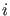

It may be useful to have a specific locator code for locating certain singularities (cf. section 2.4.4). To use a specific locator you must set the option Locators. This is a vector in which the index of an element corresponds to the index of a singularity. Setting the entry to  means the presence of a user-defined locator.
The continuer has stored the handles to the locators in the variable cds.curve_locator and will then make a call to
means the presence of a user-defined locator.
The continuer has stored the handles to the locators in the variable cds.curve_locator and will then make a call to
[x,v]=feval(cds.curve_locate,i,x1,v1,x2,v2)
to locate singularity  which was detected between x1 and x2 with their corresponding tangent vectors v1 and v2. It must return the located point and the tangent vector at that point. If the locator was unable to find a point it should return x = [].